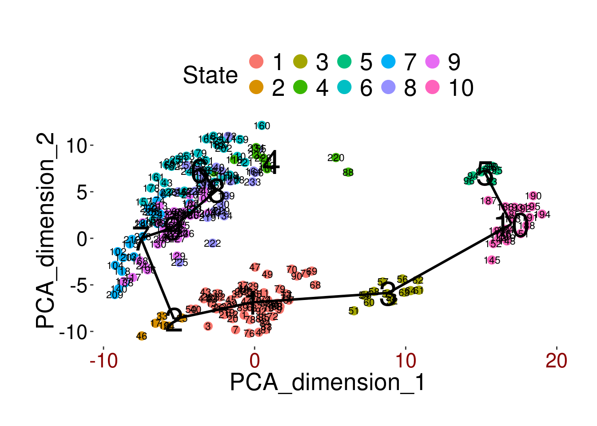
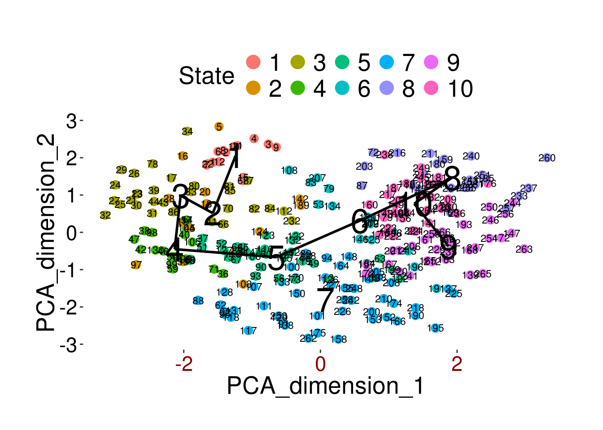
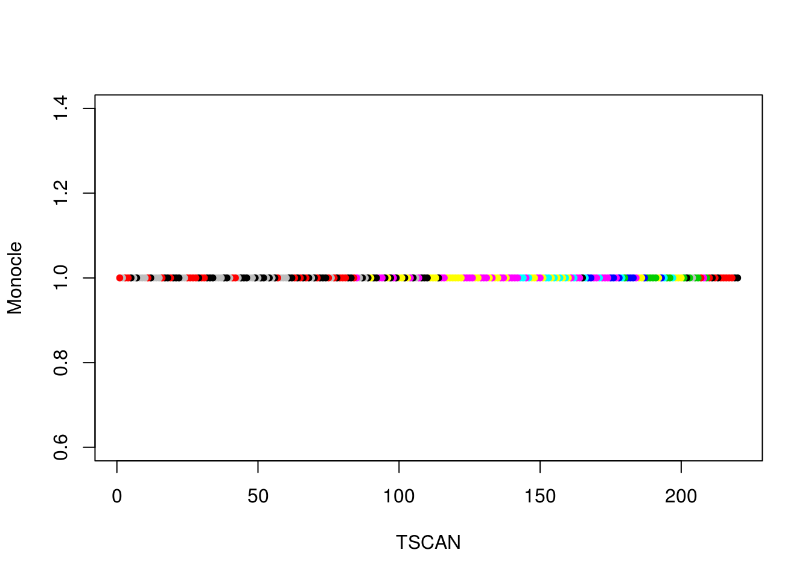

19 Ordering of cells according to pseudotime
library(TSCAN)
library(M3Drop)
library(monocle)
set.seed(1)In many situations, one is studying a process where cells change continuously. This includes for example many differentiation processes taking place during development, where following a stimulus, cells will change from one cell-type to another. Ideally, we would like to monitor the expression levels of an individual cell over time. Unfortunately, such monitoring is not possible with scRNA-seq since the cell is lysed (killed) when the RNA is extracted.
Instead, we must sample at specific time-points to obtain snapshots of the gene expression profiles. However, since some of the cells will proceed faster along the differentiation than others, the actual time may not correspond to the developmental progression. Thus, we would like to order the cells along a one-dimensional trajectory to identify the progression through state space of which can be interpreted as a temporal axis (hence the name pseudotime).
In this chapter we will consider two different tools, Monocle and TSCAN for ordering cells according to their pseudotime development. To illustrate the methods we will be using a dataset on mouse embryonic development that was collected by Deng et al. The dataset consists of 268 cells from 10 different time-points of early mouse development.
19.1 TSCAN
First we will try to use all genes to order the cells.
deng <- readRDS("deng/deng.rds")
cellLabels <- colnames(deng)
procdeng <- TSCAN::preprocess(deng, clusternum=10)
colnames(procdeng) <- 1:268
dengclust <- TSCAN::exprmclust(procdeng, clusternum=10)
TSCAN::plotmclust(dengclust)
dengorderTSCAN <- TSCAN::TSCANorder(dengclust, orderonly=F)19.2 monocle
Unfortunately, Monocle does not work when all the genes are used, so we must carry out feature selection. First, we use M3D
m3dGenes <- as.character(
M3Drop::M3Drop_Differential_Expression(deng, suppress.plot=T)$Gene
)
d <- deng[which(m3dGenes %in% rownames(deng)),]
d <- d[!duplicated(rownames(d)),]pd <- as.data.frame(colnames(d))
names(pd) <- "timepoint"
pd <- new("AnnotatedDataFrame", data=pd)
fd <- as.data.frame(rownames(d))
names(fd) <- "gene"
fd <- new("AnnotatedDataFrame", data=fd)
colnames(d) <- 1:dim(d)[2]
rownames(d) <- 1:dim(d)[1]
dCellData <- monocle::newCellDataSet(d, phenoData=pd, featureData=fd)
dCellData <- monocle::setOrderingFilter(dCellData, 1:length(m3dGenes))
dCellDataSet <- monocle::reduceDimension(dCellData, pseudo_expr=1)## Reducing to independent componentsdCellDataSet <- monocle::orderCells(dCellDataSet, reverse=T)
monocle::plot_spanning_tree(dCellDataSet)
As you can see, Monocle has identified 7 different states. This is probably not such a bad conclusion since we know that three of the time-points correspond to different stages of the two-cell embryo. Also, we saw that the three blastocyst stages correspond to inner cell mass and trophectoderm cells. We can take a closer look at the clusters
dMonocleClusters <- phenoData(dCellDataSet)$StateExercise: Compare the clusters identified by monocle with the annotated ones. How well do the labels correspond?
Next, we investigate the order of the cells inferred by Monocle
ts <- as.matrix(phenoData(dCellDataSet)$Pseudotime)
dOrder <- sort.int(ts, index.return=T)$ix
dOrder## [1] 192 263 139 153 173 137 221 266 222 259 242 246 163 260 224 166 188
## [18] 238 227 248 264 234 231 261 258 243 241 268 233 247 226 252 262 267
## [35] 237 150 230 175 138 256 235 257 168 236 195 250 232 265 254 255 253
## [52] 178 229 223 190 196 148 152 164 147 170 155 156 140 154 186 228 167
## [69] 203 245 219 174 240 244 143 180 185 218 209 191 184 239 193 199 172
## [86] 151 145 179 136 189 204 187 181 197 220 225 176 157 144 198 182 183
## [103] 200 160 146 165 159 207 161 194 158 142 177 171 217 249 215 251 216
## [120] 211 201 202 162 149 210 213 141 214 206 169 212 208 205 131 72 118
## [137] 101 125 135 102 110 117 124 133 128 109 127 120 113 134 122 129 121
## [154] 126 119 130 132 108 105 115 114 112 100 99 88 123 97 91 111 66
## [171] 70 96 71 63 94 106 107 90 58 104 67 76 60 89 87 86 93
## [188] 54 55 92 116 73 98 95 51 74 61 56 53 52 49 50 75 64
## [205] 62 79 57 85 83 68 65 59 77 84 82 69 78 80 81 38 39
## [222] 35 41 42 44 43 37 40 36 45 46 47 48 26 30 33 34 25
## [239] 27 29 28 31 32 17 18 13 20 24 19 14 22 23 21 15 16
## [256] 5 8 2 1 103 4 3 9 10 11 12 7 6Now, we repeat the exercise using TSCAN
procdeng <- TSCAN::preprocess(d, clusternum=10)
colnames(procdeng) <- 1:268
dengclust <- TSCAN::exprmclust(procdeng, clusternum=10)
TSCAN::plotmclust(dengclust)
dengorderTSCAN <- TSCAN::TSCANorder(dengclust, orderonly=F)Exercise: Use TSCAN to obtain 7 clusters and compare the groups with those obtained from Monocle
19.3 Comparison of the methods
How do the trajectories inferred by TSCAN and Monocle compare?
inds <- dengorderTSCAN$sample_name
plot(
rev(dengorderTSCAN[,3]),
pData(dCellDataSet)[inds,3],
col=cellLabels[as.numeric(inds)],
pch=20,
xlab="TSCAN",
ylab="Monocle"
)
Exercise: Repeat the exercise using a subset of the genes, e.g. the set of highly variable genes that can be obtained using M3Drop::Brennecke_getVariableGenes